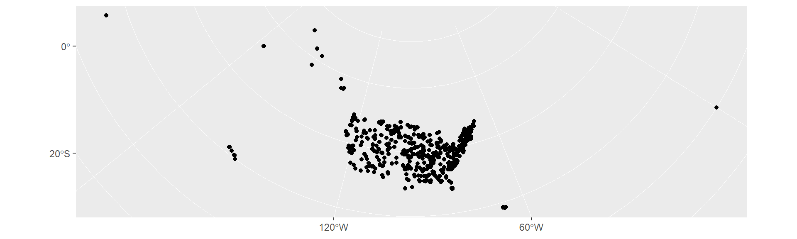
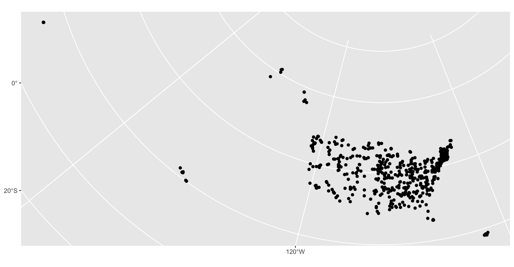
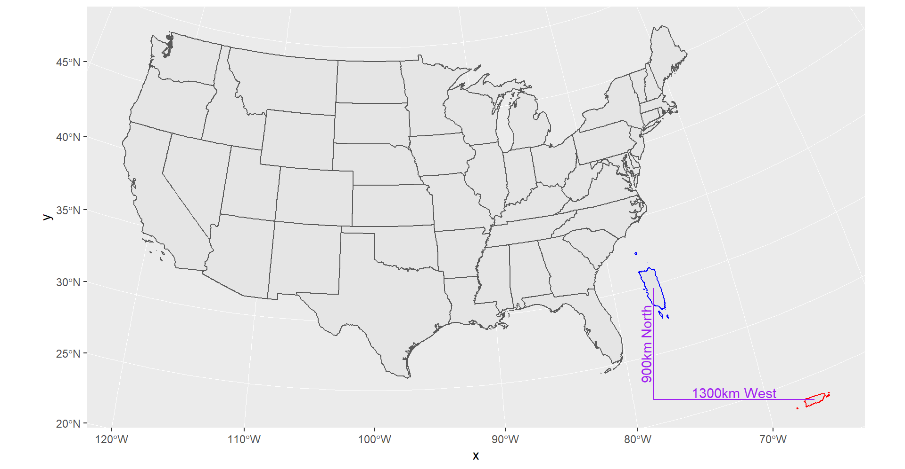

The goal of ggcart is to include Puerto Rico, the Virgin Islands and Guam in the traditional Albers maps. Also, ggcart will make it easier to map line, point and other data in the Albers projection.
You can install the development version from GitHub with:
Sample datasets include information from the National Inventory of Dams and the National Bridge Inventory.
library(ggcart)
## Pull in sample data for mapping
head(bridges) ## Data slice from National Bridge Inventory
#> st_abbv rectype rtnum strcture latitude longitude year
#> 1 AK 1 10808 NO DATA ENTERED 0.00000 0.0000 2008
#> 2 AK 1 00391 CHINIAK HIGHWAY 57.60400 -152.4055 1974
#> 3 AK 1 80007 8000700 55.79634 -131.6278 1999
#> 4 AK 1 00966 MENDENHALL LOOP RD 58.40417 -134.5847 1985
#> 5 AK 1 06590 NO DATA ENTERED 56.34885 -132.7188 2004
#> 6 AK 1 NSPCY DIMOND DRIVE 61.17722 -149.8447 1978
#> bridgecond geometry
#> 1 F NaN, NaN
#> 2 F -3422682, 4855940
#> 3 G -2309931, 4058852
#> 4 F -2384415, 4382488
#> 5 G -2355319, 4139464
#> 6 G -3090509, 5070914The standard Albers conic projection isn’t great for points in Alaska, Hawaii, Puerto Rico, Guam and the U.S. Virgin Islands. (AK and HI are taken care of with AlbersUSA. )
# Map the dams sample data.
library(ggplot2)
#> Warning: package 'ggplot2' was built under R version 3.5.3
ggplot() + geom_sf(data = dams) + coord_sf()

To convert your own set of point data with a latitude and longitude to an sf object, try the following:
# To convert your own point data for use with ggcart
bridges <- read_sf("data-raw/bridges.csv", ## Replace with your own csv file
options = c("X_POSSIBLE_NAMES=longitude",
"Y_POSSIBLE_NAMES=latitude"))Demonstration on how the shift/rotate/scale functionality within the transport_sf() function works. For this example we will be shifting Puerto Rico by 1300km west and 900km north, then rotate 90 degrees, then scale to 2 times the size.
### Demonstration of how the shift functionality works -----------
pr_centroid <- sf::st_centroid(sf::st_geometry(ggcart:::puerto_rico))
# define shift dimension points for visual reference on map
pt1 <- pr_centroid
pt2 <- pr_centroid + 1000*c(-1300,0)
pt3 <- pr_centroid + 1000*c(-1300,900)
# Create into two lines (pt1-->pt2, pt2-->pt3) in sf object
pts <- sf::st_multilinestring(list(rbind(pt1[[1]][1:2], pt2[[1]][1:2]),
rbind(pt2[[1]][1:2], pt3[[1]][1:2])))
pts <- sf::st_sfc(pts)
pts <- sf::st_set_crs(pts, sf::st_crs(pr_centroid))
# plot the shift/rotate/scale to Puerto Rico
ggplot()+
geom_sf(data=ggcart:::lower48)+
geom_sf(data=ggcart:::puerto_rico, color="red")+
geom_sf(data=ggcart:::transport_sf(sf=ggcart:::puerto_rico,
scale=2,
shift = c(-1300,900)*1000,
rotate=pi/2), color="blue")+
geom_sf(data=pts, color="purple")+
annotate(geom="text",
x=c(mean(c(pt1[[1]][1], pt2[[1]][1])),
mean(c(pt2[[1]][1], pt3[[1]][1]))),
y=c(mean(c(pt1[[1]][2], pt2[[1]][2])),
mean(c(pt2[[1]][2], pt3[[1]][2]))),
label=c("1300km West","900km North"),
angle=c(0,90),
color="purple",
vjust=-.2)